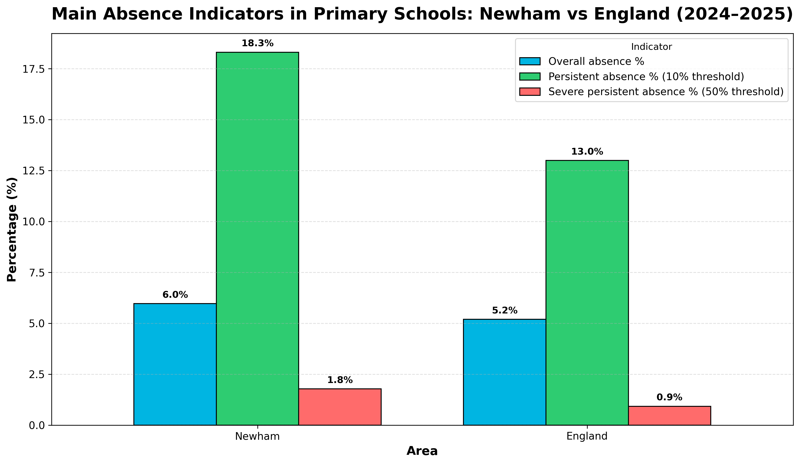
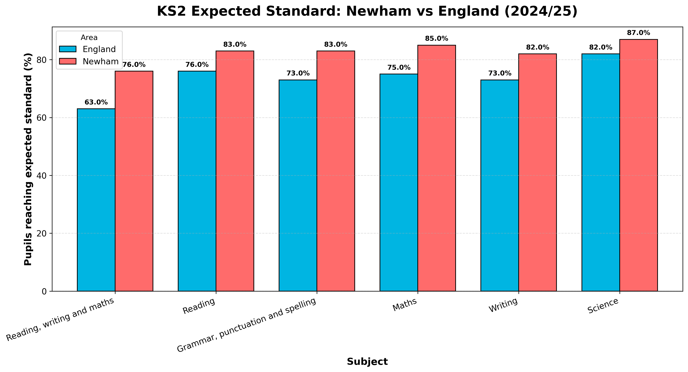
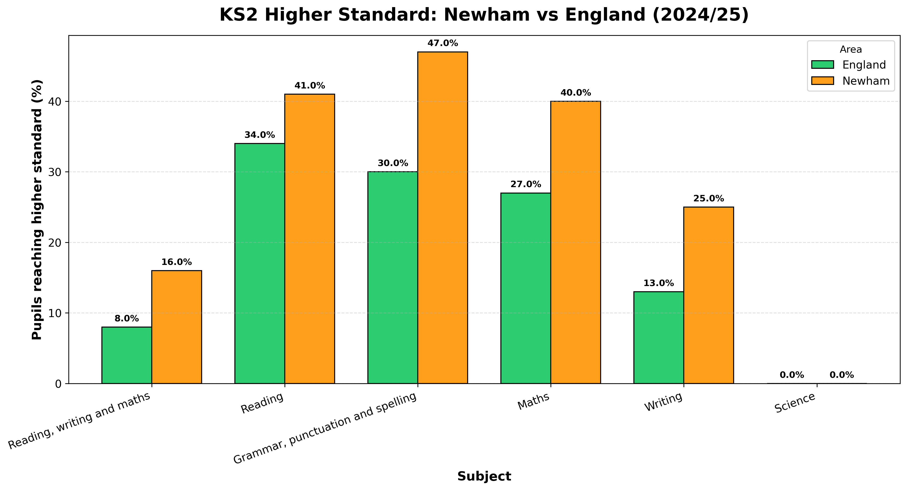
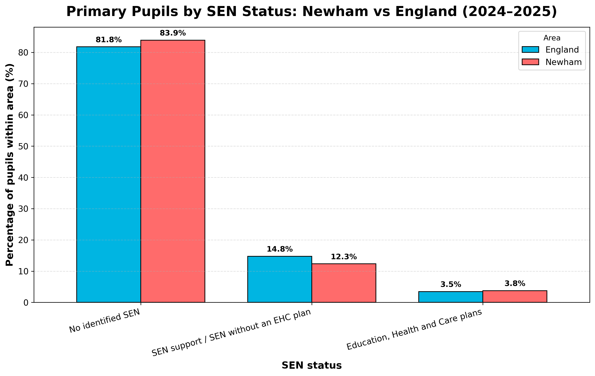

The first in a four-part series exploring how school assessment data should be interpreted carefully, contextually, and with professional judgement.
Imagine a London borough where primary school pupils are absent more often than the national average – yet outperform England at Key Stage 2. That is not a thought experiment. It is what the 2024–2025 data for Newham actually shows. It is also a useful reminder that school assessment data rarely tells a simple story. This article – the first in a four-part series – explores what assessment data can show about pupil learning in English schools, what it leaves out, and why it should be read carefully rather than treated as a self-contained answer.
The first thing to understand about assessment is that it is not one thing. In England, the most visible form is statutory assessment – the tests and teacher assessments at the end of key stages that generate the scores in league tables and inspection reports. These are primarily summative: they describe what pupils have achieved at a given point. But alongside this sits formative assessment, which Paul Black and Dylan Wiliam established as one of the most powerful tools available to teachers – not for measuring learning after the fact, but for shaping it as it happens. A teacher who spots a misconception mid-lesson and changes tack immediately is doing something categorically different from a teacher who reads an end-of-year score and adjusts next year’s planning. Both are using evidence, but they are using it for entirely different purposes. Confusing the two – or treating summative data as if it tells you what formative assessment tells you – is one of the most common mistakes in how schools use data.
This distinction matters because the data that drives public debate about schools – absence rates, KS2 scores, Ofsted grades – is almost entirely summative. It tells you outcomes. It does not tell you why those outcomes exist, how evenly they are distributed, or what it would take to change them. The Department for Education has itself acknowledged that assessment data should be read alongside broader contextual information, because the numbers alone do not carry their own explanation. That is not a reason to dismiss the data. It is a reason to read it more carefully than we usually do.
That is the core argument of this article, and it runs through the data analysis below. Summative data is not useless – far from it. But it needs to be interrogated, not just reported. And as the Newham figures show, the story it tells is rarely as straightforward as the headline numbers suggest.
Data note. The figures below draw on publicly available Department for Education datasets for the 2024-2025 academic year. To keep the illustration focused and comparable, the analysis uses England as the national benchmark, Newham as the local authority case, and state-funded primary data on absence, KS2 attainment and SEN status.
To illustrate these limitations in practice, the figures below use publicly available 2024–2025 data for state-funded primary education in Newham and England. Taken together, they show that school data can reveal meaningful patterns in absence, attainment, and pupil profile, but they also show why those patterns should not be treated as self-explanatory.

Figure 1 shows that Newham recorded higher overall absence, persistent absence, and severe persistent absence than England in 2024–2025. This matters because attendance data can act as an early warning sign of reduced access to learning, interrupted curriculum exposure, and possible vulnerability. The key interpretive issue here, however, is causation. Similar absence rates can reflect very different underlying circumstances, including short-term illness, family pressures, attendance habits, or wider barriers to engagement. Attendance data is therefore useful as an indicator of possible risk, but its meaning depends on context.

Figure 2 shows that Newham outperforms England on KS2 expected standard measures across reading, writing, and maths. This matters because it directly complicates the assumption – common in public debate – that higher absence must produce weaker outcomes. It does not, at least not at local authority level. The interpretive issue here is distribution: strong average performance can mask substantial variation between schools, pupil groups, or classrooms. The chart tells you outcomes are good overall; it does not tell you how evenly those outcomes are shared.

Figure 3 extends this picture to the higher standard threshold, where Newham again outperforms England across subjects. This is significant because it rules out one obvious explanation for the Figure 2 result: that Newham’s stronger performance at expected standard simply reflects a concentration of pupils just clearing the bar. The higher standard data shows the pattern holds further up the attainment range too. The interpretive issue here is mechanism. The data confirms that strong performance exists; it does not tell you what produces it – which combinations of teaching quality, curriculum design, resourcing, or pupil experience are actually driving the result.

Figure 4 adds contextual information by comparing the SEN status profile of primary pupils in Newham and England. This is helpful because it reminds the reader that attainment and attendance are shaped within a wider pupil context rather than in isolation. The key interpretive issue here is classification. Categories such as SEN support and EHC plan are important administrative indicators, but they do not fully capture the timing of identification, the complexity of need, or the quality of provision that pupils receive. As a result, the figure adds useful context while still requiring professional interpretation.
Read together, the four figures make the central argument of this article concrete. Higher absence does not automatically mean worse outcomes – Newham’s KS2 results show that clearly. Strong attainment at local authority level does not mean every pupil is well served – the distribution question remains open. And a relatively high proportion of pupils with SEN does not explain away either the absence or the attainment picture – it adds a layer of context that the other figures cannot supply on their own. Each dataset illuminates something the others cannot. None of them, alone, tells you what is actually happening in classrooms.
What does this mean in practice? For teachers and school leaders, it means treating assessment data as a starting point rather than a verdict. A single score – whether an attendance figure or a KS2 result – is most useful when it prompts a conversation rather than closes one. Which pupils are behind the average? What do we already know about their circumstances? What would we need to find out? These are the kinds of questions that professional judgement makes possible, and that data alone cannot answer. Article 2 in this series explores how combining multiple indicators, rather than relying on any one measure, can make that process of enquiry both sharper and more equitable.
Black, P. and Wiliam, D. (1998) ‘Assessment and classroom learning’, Assessment in Education: Principles, Policy and Practice, 5(1), pp. 7–74.
Department for Education (2025) Pupil absence in schools in England: 2024 to 2025. Available at: https://explore-education-statistics.service.gov.uk
Department for Education (2025) Key stage 2 attainment: 2024 to 2025. Available at: https://explore-education-statistics.service.gov.uk
Department for Education (2025) Special educational needs in England: 2024 to 2025. Available at: https://explore-education-statistics.service.gov.uk